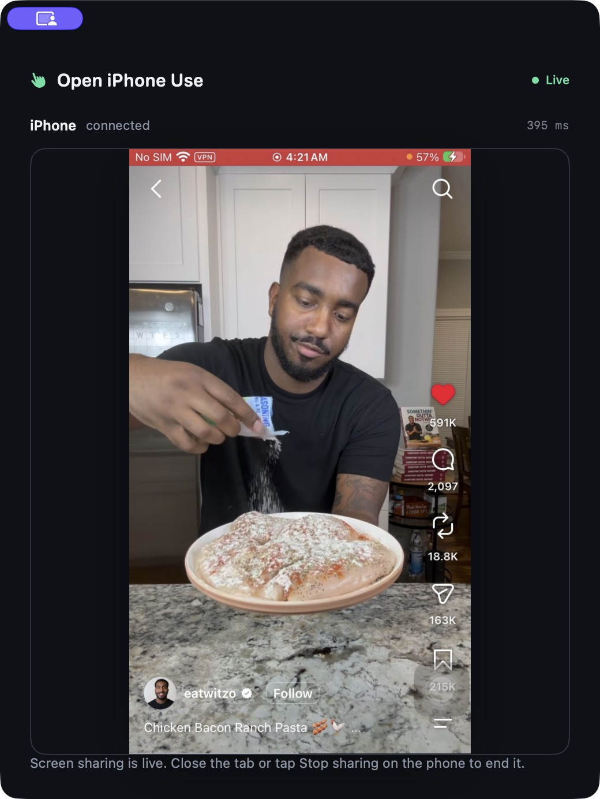
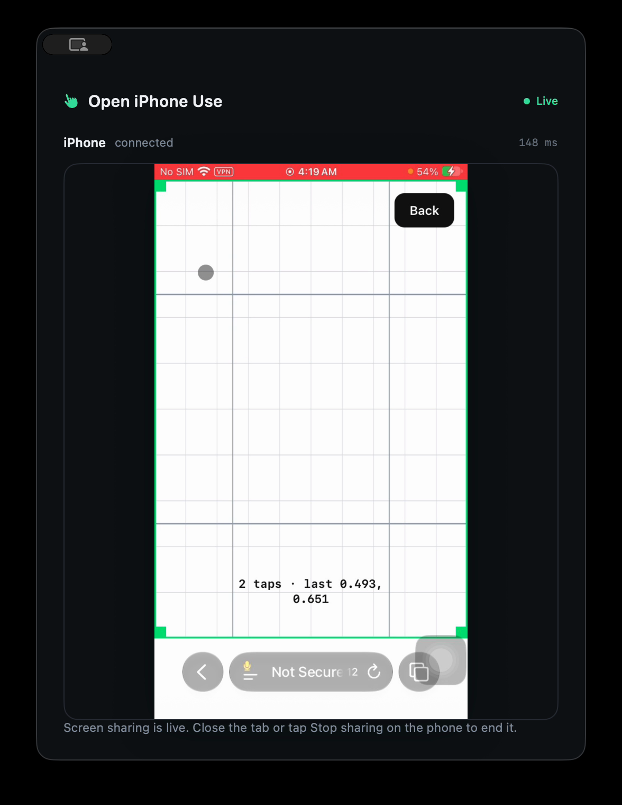

Install on the Mac
Open the DMG and move Open iPhone Use to Applications. Allow Bluetooth when macOS asks.
Open source · MCP · macOS
Open iPhone Use connects your iPhone to an AI agent through your Mac. The Mac sends keyboard and pointer input; Safari shares the phone screen over Wi-Fi.
All you need: an iPhone and an Apple Silicon MacBook. No iPhone app. No extra hardware.

A real device, a real task
The agent searches Instagram for dinner recipes, opens a cooking reel, moves through the feed, and likes a video. Every action goes through MCP, Bluetooth HID, and the live screen stream.
Explore the source ↗The connection
The iPhone remains yours. The Mac provides input and a private screen receiver; your MCP client brings the agent.
Closed loop: a fresh screenshot goes to the agent after actions, so it can check the result before moving on.
Start with what you own
The Mac DMG contains the app and its local MCP server. On iPhone, open the private sharing page in Safari and approve screen sharing.
Download for macOS ↓Open the DMG and move Open iPhone Use to Applications. Allow Bluetooth when macOS asks.
Turn on AssistiveTouch and pair Open iPhone Use from Bluetooth Devices.
Open the Mac's private link on the iPhone, trust the local certificate, and start screen sharing.
Add the bundled MCP server to Codex or another image-capable agent. The Mac app does not need an AI API key.

Two quick taps
The first setup measures pointer movement with two clicks on a simple board. Compatible calibration is saved on the Mac and reused across chats. If it cannot see the pointer safely, it stops before tapping.
Read device checks ↗Built for agent tools
Apple's iPhone Mirroring brings an iPhone to the Mac desktop. Open iPhone Use makes the screen and input available to MCP agents: a local Safari capture stream, Bluetooth keyboard and pointer, and standard tools your agent can call.
The project grows outward
Available Apple Silicon Mac app · iPhone Safari capture · MCP
Planned Linux and Windows builds
Planned ESP32 HID support · no computer in use
Planned Raspberry Pi host · no Mac or PC in the setup
Planned Multiple iPhones